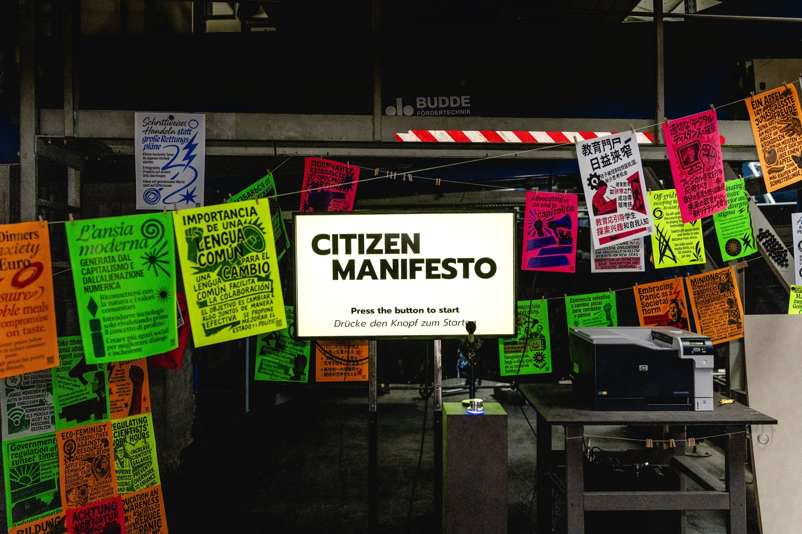
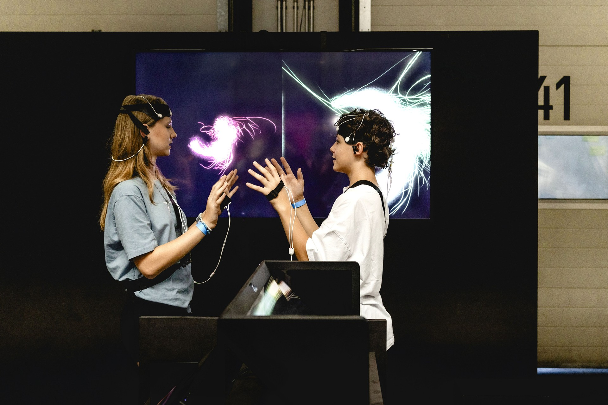
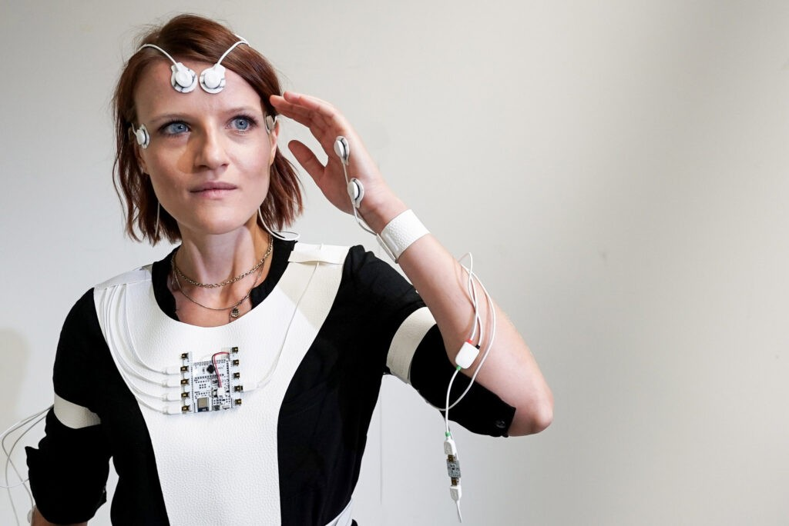

I / INPUT
何を持ち込んでいるか。
活動の出発点となる資源と課題を分けて整理します。「自社」は、その場・制度を運営する組織を指します。
- 他社・事業会社
- 行政・公共機関
今回のmedSPACEおよびFuture Humanity Project資料では、行政職員が共同制作や授業導入の責任者を担うことは未確認。公的大学の参加と行政の直接参加は区別する。
公開資料では未確認- スタートアップ
この二つの具体例における主要スタートアップ、出資、採用契約は未確認。産業企業の共同研究を、そのままスタートアップ支援実績に数えない。
公開資料では未確認- アカデミア
有形資産
場所・設備・実証環境関係資本
信頼・ネットワーク・導入先金融資本
活動資金・投資・費用負担大学・企業との共同開発および授業への導入は確認できるが、開発費の負担比率、保守契約、ライセンス料、大学一校あたりの総運用費は今回資料では未確認。
知的資本・データ
技術・知財・知識・標準課題・ニーズ
誰の何を変えるのかII / VALUE CREATION FUNCTIONS
資源を、どう価値へ変えるか。
以下は既存の8ステップへの編集上の対応づけです。各施設の公式な工程名や、全工程を自前で担うことを意味しません。
III / OUTPUT
直接、何が生まれたか。
試作品、データ、契約、標準、育成した人材など、活動から直接生まれたもの。
医学教育用のmedSPACE、CT・MRIを使う立体的な授業資料、教師が操作するインタラクティブな提示環境。2021年から授業で使われていると運営側は報告する。
2024年9月のLinz・Grazをつなぐ同時3D授業。Grazの標本をカメラでLinzへ伝え、別拠点の学生が質問できる形式を実施した。
公開資料で確認出典 1Hello Worlds等の公開作品・体験と、Future Humanity Projectの探索的研究。市民との対話や公開試作を可能にする場であり、医療教育の導入成果とは別の出力である。
IV / OUTCOME
その結果、何が変わったか。
実際の利用、行動、業務、事業、地域の変化。報告された変化と、施設の活動に帰属できる効果は区別します。
大学の授業への採用と、二大学を結ぶ形式への展開を確認できる。継続的な教育運用への移行は実装上の成果だが、全国的な普及や患者の健康改善を示すものではない。
原著研究では学生108人が受けた、解剖標本を用いる試験の平均正答率が44.8%から46.3%へ変化したが、有意差はなかった（p=.311）。学生の分かりやすさ等の主観評価と、測定された技能を分けて読む必要がある。
公開資料で確認出典 1
PROJECT IN FOCUS / 具体的な事例
Cinematic Anatomy／JKU medSPACEとLinz–Grazの3D授業
確認できた段階：展開 調査確認日 2026-09-28
誰の課題を、どう扱ったか
確認できた変化
採用・拠点間展開は確認できるが、解剖標本上の技能を測った原著では有意改善を確認できなかった。体験への評価だけで学習効果を一般化できない。
評価の限界：画像読影・病理理解等の別の教育目標、長期的な学習効果、運用費と導入可能性を追跡する必要がある。
DESIGN BACKWARDS FROM IMPLEMENTATION
社会実装から逆算して、
何を先に整えているか。
実証の先にある導入・運用・継続から、この事例の設計を読み解きます。仕組みの存在と、全案件で成果が出たことは別に扱います。
MORE DETAIL / 運営・根拠・応用
運営の全体像と、学びを深める資料。
費用負担、公表値、応用条件、写真・動画、原典を続けて確認できます。
01どう動かしているのか。
Futurelabの研究者、アーティスト、デザイナー、開発者が企業・研究機関と協働し、問いの探索、Art Thinkingのワークショップ、作品・技術試作、公共展示へと接続する。2025年からのFuture Humanity Projectでは、人が将来どう生きるかに加えて、人間自体がどう変わるかを研究する。2026年9月公開のHello Worlds!はMe・You・Usの3視点で、自己、他者・非人間、共同体を扱う。来場者はAIや装置と関わり、自分の解釈や将来像を提示する。Deep Mirrorの参加は任意で、本人は収集された一時記録と解釈を確認・削除できる。展示で得た洞察を企業の研究開発に返す設計だが、仕様変更の件数や採択基準は公開されていない。
- 技術の用途より先に人間・社会への問いを設定
- アーティストと研究者が未来の体験を試作
- 展示と対話に市民が参加
- 対立する反応と洞察を研究・設計へ戻す
02誰が負担し、誰が担うか。
企業・大学との共同研究や企業受託を組み合わせる。Futurelab単体の年間財源内訳、Hello Worlds!の契約金額・負担比率・知財条件は未確認。Ars Electronicaの運営法人はリンツ市の企業グループに属する。
制度やプログラムの財源と、各参加企業・地域に発生する費用は同じではありません。公開範囲を超える案件別予算・契約条件は未確認です。
03確認できたこと。
1996年に設立。1997年に大学連携・産業委託、2004年に海外企業からの委託が始まったと公式沿革に記載。
読み取れる範囲：長い歴史や委託の存在は、全案件の収益性・社会的効果を証明しない。
原典で確かめる ↗ 出典の説明 ↓04日本で活かすなら。
国内の共創拠点では、製品が完成してからアートで見せる予算をつけるだけでは再現できない。アーティストを課題定義の段階から正式な共同研究者にし、技術者には都合の悪い問いを扱う権限を持たせる。例えば『速く移動する』だけでなく、『移動能力が変わると自立や他者への依存をどう感じるか』を体験にする。市民の発言を感想文で終わらせず、研究要件の変更・不採用・追加調査と対応付ける台帳を作る。参加しない権利、本人への結果返却、データ削除を体験の一部として用意する。これは本調査の応用分析。
05そのまま真似できないこと。
展示来場者は住民全体の代表ではなく、体験直後の驚きは生活上の需要や支払意思と同じではない。企業の研究費で運営する場合、批判的な論点が選別される可能性も検証対象となる。今回確認した公開資料では、展示が実際に変更した研究仕様、投資判断、事業収益、公共施策の一覧や比較評価は見つからない。展示装置による個人データ処理の説明と、社会的な合意形成の成立は別に評価すべきである。
06次に、何を確かめるか。
提案・未実施：企業の研究責任者とアーティストを共同責任者にし、8週間で2つの相反する未来体験を制作。市民30人と現場職員10人に体験してもらい、望ましい点・拒否条件・誤解を収集。研究仕様に反映した変更と不採用理由を公開可能な範囲で記録する。新しい論点が具体的な研究判断に使われれば継続、感想収集だけなら方法を修正、同意や拒否権を保てなければデータ取得を止める。
07現場を、写真と動画で。

PHOTO: Citizen Manifesto / Ars Electronica Futurelab (AT), Hakuhodo Inc. (JP). Photo: Bettina Gangl · 掲載元 ↗ · Ars-related editorial press permission; underlying CC BY-NC-ND 4.0 ↗ · 縮小表示のみ。色変更・切り抜きなし。

PHOTO: Life Ink Community / Wacom (JP), TOA (JP), Ars Electronica Futurelab (AT). Photo: Bettina Gangl · 掲載元 ↗ · Ars-related editorial press permission; underlying CC BY-NC-ND 4.0 ↗ · 縮小表示のみ。色変更・切り抜きなし。

PHOTO: Life Ink / Wacom, Ars Electronica Futurelab. Photo: Ars Electronica / Birgit Cakir · 掲載元 ↗ · Ars-related editorial press permission; underlying CC BY-NC-ND 4.0 ↗ · 縮小表示のみ。色変更・切り抜きなし。
冒頭写真：Open Futurelab 2025で来場者がXRヘッドセットを装着し、共同創作を体験する実写。
公式サイトで、写真・最新の活動を見る ↗08原典を読む。
Virtuelle Anatomie: 2 Unis – 1 virtueller 3D-Hörsaal ↗
LinzとGrazの同期3D講義、双方向の質問、解剖実習との相互補完
Upper Austrian Innovation Award 2023: Ars Electronica Futurelab wins with JKU medSPACE ↗
2021年の授業導入、既存医療用描画技術と展示技術の接続、匿名化した患者画像の利用
On the added benefit of virtual anatomy for dissection-based skills ↗
medSPACEでの授業を対象とした原著、OSPE108人で有意差なし、主観評価との区別